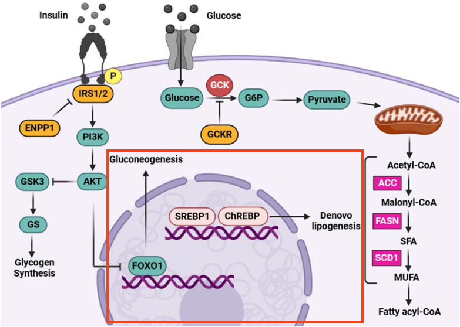

Background
In this step, we are modeling the activity of Insulin-glucose signaling on several transcription factors; FOXO1, SREBP1 and MLXIPL (official name for ChREBP). Since the figure describes indirect effects of these transcription factors on downstream processes, rather than the direct transcription of specific genes, we will use generic interaction types to describe these effects. To learn more about how to model transcripton of specific target genes, see our instructions for drawing a transcrition-translation interaction.
Your Mission
Draw the part of the pathway outlined in red below:

- Move FOXO1, SREBF1 and MLXIPL nodes into the center of the pathway, to the right of the signaling cascade.
- Select the SREBF1 and MLXIPL nodes and stack them horizontally, then group them.
- Add inhibition from the AKT1/2/3 group to FOXO1. To make it an arrow like in the figure, right-click on the interaction and select Line type > Elbow.
- Add a pathway node for "Gluconeogenesis", and annotate it manually using "WP534" as the identifier and "WikiPathways" as the database.
- Add another pathway node for "De novo lipigenesis". Since there is no pathway model at WikiPathways describing this process, leave the identifier and database empty.
- A pathway node is by default of Shape Type "None". Update the Shape Type to "RoundedRectangle" for both pathway nodes. This ensures that the pathway node is clickabile in WikiPathways.
- Add arrow interaction from FOXO1 to the Gluconeogenesis node.
- Add arrow from the SREBP1/MLXIPL group to the De novo lipogenesis node.
- Select the Nucleus object from the Objects panel of the toolbar.
- Click on the canvas to place the nucleus near the three transcription factor nodes.
- With the Nucleus object selected, use the yellow resize targets to change the size of the object to fit the FOXO1, SREBP1 and MLXIPL nodes.
- With the cell object selected, click and drag anywhere on the object outline to position it over the entire catalysis reaction.
- Select the Nucleus object and in the Properties panel, type in "Nucleus" for Text Label.
- Under Vertical Alignment, select "Bottom".
- When you have completed the challenge, save your work as a GPML file under File > Save As.
- Drag-and-drop the GPML file below to check if it is correct.